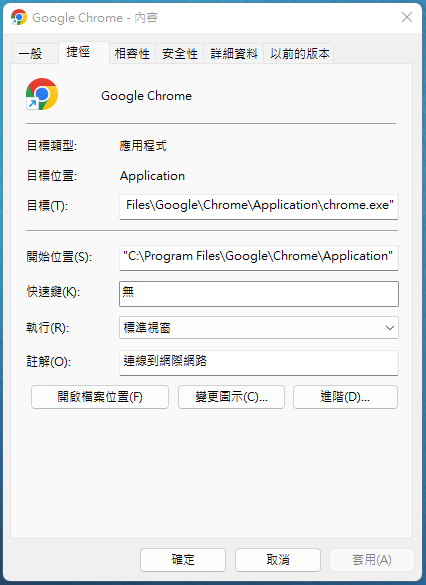
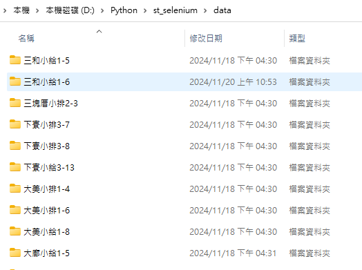
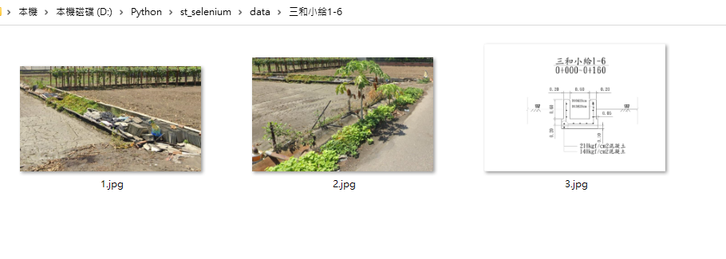

前言
原本想像中的Selenium會需要從無到有 開啟一個網站後開始進行資料填寫，大多數的網站都會有帳號密碼驗證機制，甚至祭出驗證碼、選擇汽車圖片、移動滑鼠到指定位置...等反爬蟲機制來確認是否為機器人，但若網頁可以被接管 繞開這些機制的話，那整個資料填報作業就會很有機會讓電腦代勞，這就是寫程式的趣味來源，當然還是要小心不能點太快，否則網站可能會負荷不過來。
使用工具
Chrome
網頁瀏覽器，透過以下指令即可進行網站操作接管，需要根據自身電腦的chrome安裝路徑執行，建議將原本所開啟中的chrome畫面通通關閉後再執行以下指令。
WIN10
"C:\Program Files (x86)\Google\Chrome\Application\chrome.exe" –remote-debugging-port=9222
WIN11
"C:\Program Files\Google\Chrome\Application\chrome.exe" –remote-debugging-port=9222
NOTE:如果仍然找不到瀏覽器的執行路徑，可以在原本桌面瀏覽器捷徑找尋內容

Fig1. 瀏覽器畫面
Selenium
目前使用為Selenium4的語法，透過分析網站的元素來進行文字輸入、文字萃取、點擊連結、循環表格取得目標欄位...等。
網站接管步驟
打開終端機
輸入指令
"C:\Program Files\Google\Chrome\Application\chrome.exe" –remote-debugging-port=9222
開啟網站，輸入帳號密碼驗證碼 後到可填寫畫面
交給Selenium來進行網站自動填報作業。
Python
requirements.txt
1 2 3 selenium pandas openpyxl
main.py
接管瀏覽器
1 2 3 4 5 6 7 8 9 10 11 12 13 14 15 16 17 18 19 from selenium import webdriverfrom selenium.webdriver.chrome.options import Optionsdef init_driver (): chrome_options = Options() chrome_options.add_experimental_option("debuggerAddress" , "127.0.0.1:9222" ) driver = webdriver.Chrome(options=chrome_options) return driver driver=init_driver() current_url = driver.current_url print ("當前網址:" , current_url)
取得網頁元素
ID 用於定位具有唯一標識符的元素
XPATH 當元素位置不確定或無法使用其他方式定位時使用
LINK_TEXT 用於定位頁面上可點擊的超連結文字
CSS_SELECTOR 當元素的結構較為複雜或無法使用ID時使用
執行網頁動作
文字欄位操作 clear 清空文字欄位的內容
sendkey 在文字欄位中輸入文字
click 點擊文字欄位（若為可點擊的元素）
選擇欄位操作 select_by_value 根據選項的值來選擇
select_by_visible_value 根據選項的可見文字來選擇
網頁表格操作
1 2 3 4 5 6 7 8 9 10 11 12 13 14 15 16 17 18 19 20 21 22 def edit_case (driver,targetID ): select_element = driver.find_element(By.XPATH, '//*[@id="DataTables_Table_0_length"]/label/select' ) select = Select(select_element) select.select_by_value("100" ) table = driver.find_element(By.ID, "DataTables_Table_0" ) rows = table.find_elements(By.CSS_SELECTOR, "tbody tr" ) for row in rows: cells = row.find_elements(By.CSS_SELECTOR, "td" ) if cells[0 ].text==targetID: print (cells[0 ].text) edit_button = cells[3 ].find_element(By.CSS_SELECTOR, "a" ) edit_button.click() break
刪除時之警告視窗
1 2 3 4 5 6 7 8 9 10 11 12 13 14 15 def check_item_by_chname (driver,ch_name,is_rebuild ): table = driver.find_element(By.ID, "DataTables_Table_0" ) rows = table.find_elements(By.CSS_SELECTOR, "tbody tr" ) for row in rows: cells = row.find_elements(By.CSS_SELECTOR, "td" ) del_button=cells[3 ].find_element(By.CSS_SELECTOR, 'a[onclick^="delConfirm"]' ) del_button.click() alert = Alert(driver) alert.accept() print ("已經強制刪除" )
圖片置換處理
1 2 3 4 5 6 7 8 9 10 11 12 13 14 15 16 17 18 19 20 21 22 23 24 25 26 27 28 29 30 31 32 33 def get_photo_path (ch_name ): import os if os.path.exists('./data/' +ch_name): photo_list=[] for file in os.listdir('D:/Python/st_selenium/data/' +ch_name): print (file) photo_list.append('D:/Python/st_selenium/data/' +ch_name+"/" +file) return photo_list def paste_photo (driver,photo_list ): file_input = driver.find_element(By.ID, "userfile1" ) file_path =photo_list[0 ] file_input.send_keys(file_path) file_input = driver.find_element(By.ID, "userfile2" ) file_path =photo_list[1 ] file_input.send_keys(file_path) file_input = driver.find_element(By.ID, "userfile3" ) file_path =photo_list[2 ] file_input.send_keys(file_path) photo_list=get_photo_path(ch) paste_photo(driver,photo_list)
資料夾安排

Fig2.
資料夾安排(以渠道名稱為分類)
資料夾內容

Fig1.
資料夾內容(檔案名稱取為數字方便排序進行)
錯誤紀錄
如果取得表格之後就要直接進行各項功能操作，會出現中止狀況，需要先把每個列的資料先儲存成list，才能根據每個list中的內容進行後續填寫、修改、儲存等功能。
1 2 3 4 5 6 7 8 9 10 11 12 13 14 15 16 17 18 19 20 21 22 23 for i in range (166 ,167 ): edit_case(driver,"OO113T" +str (i)) table = driver.find_element(By.ID, "DataTables_Table_0" ) rows = table.find_elements(By.CSS_SELECTOR, "tbody tr" ) ch_list=[] for row in rows: cells = row.find_elements(By.CSS_SELECTOR, "td" ) ch=cells[1 ].text ch_list.append(ch) for ch in ch_list: